전기공사기사 (2018-04-28 기출문제)
1과목: 전기응용 및 공사재료
1. 3상 유도전동기를 급속히 정지 또는 감속시킬 경우나 과속을 급히 막을 수 있는 가장 쉽고 효과적인 제동법은?
- 발전제동
- 회생제동
- 역전제동
- 와전류 제동
(정답률: 86%)

2. 하역 기계에서 무거운 것은 저속으로, 가벼운 것은 고속으로 작업하여 고속이나 저속에서 다 같이 동일한 동력이 요구되는 부하는?
- 정토크 부하
- 정동력 부하
- 정속도 부하
- 제곱토크 부하
(정답률: 82%)
3. 모든 방향에 400cd의 광도를 갖고 있는 전등을 지름 3m의 테이블 중심 바로 위 2m 위치에 달아 놓았다면 테이블의 평균 조도는 약 몇 lx인가?
- 35
- 53
- 71
- 90
(정답률: 49%)
4. 부식의 문제가 없고 전류밀도가 높아 자동차나 군사용의 특수목적으로 사용되는 연료전지는?
- 인산형(PAFC)연료전지
- 고체전해질형(SOFC)연료전지
- 용융탄산염형(MCFC)연료전지
- 고체고분자형(SPEFC)연료전지
(정답률: 72%)
5. 344kcal를 kWh의 단위로 표시하면?
- 0.4
- 407
- 400
- 0.0039
(정답률: 76%)
6. 열차의 자중이 100t이고, 동륜상의 중량이 90t인 기관차의 최대 견인력(kg)은? (단, 레일의 점착계수는 0.2로 한다.)
- 15000
- 16000
- 18000
- 21000
(정답률: 84%)
7. SCR에 대한 설명 중 틀린 것은?
- 위상제어의 최대 조절범위는 0°~90°이다.
- 3개 접합면을 가진 4층 다이오드 형태로 되어있다.
- 게이트단자에 펄스신호가 입력되는 순간부터 도통된다.
- 제어각이 작을수록 부하에 흐르는 전류도통각이 커진다.
(정답률: 72%)
8. n형 반도체에 대한 설명으로 옳은 것은?
- 순수 실리콘 내에 정공의 수를 늘리기 위해 As, P, Sb과 같은 불순물 원자를 첨가한 것
- 순수 실리콘 내에 정공의 수를 늘리기 위해 Al, B, Ga과 같은 불순물 원자를 첨가한 것
- 순수 실리콘 내에 전자의 수를 늘리기 위해 As, P, Sb과 같은 불순물 원자를 첨가한 것
- 순수 실리콘 내에 전자의 수를 늘리기 위해 Al, B, Ga과 같은 불순물 원자를 첨가한 것
(정답률: 70%)
9. 레이저 가열의 특징으로 틀린 것은?
- 파장이 짧은 레이저는 미세가공에 적합하다.
- 에너지 변환 효율이 높아 원격가공이 가능하다.
- 필요한 부분에 집중하여 고속으로 가열할 수 있다.
- 레이저의 파워와 조사면적을 광범위하게 제어할 수 있다.
(정답률: 62%)
10. 비시감도가 최대인 파장(nm)은?
- 350
- 450
- 500
- 555
(정답률: 78%)
11. 배전반 및 분전반에 대한 설명으로 틀린 것은?
- 기구 및 전선은 쉽게 점검할 수 있어야 한다.
- 옥외에 시설할 때는 방수형을 사용해야 한다.
- 모든 분전반은 최소간선용량보다는 작은 정격의 것이어야 한다.
- 한 개의 분전반에는 한 가지 전원(1회선의 간선)만 공급하여야 한다.
(정답률: 74%)
12. HID램프의 종류가 아닌 것은?
- 고압 수은램프
- 고압 옥소램프
- 고압 나트륨램프
- 메탈 할라이드램프
(정답률: 79%)
13. 새로 제작한 전구는 최초의 점등에서 필라멘트의 특성을 안정화시키는 작업을 무엇이라 하는가?
- 초특성
- 동정특성
- 전압특성
- 에이징(aging)
(정답률: 81%)
14. 변압기의 부속품이 아닌 것은?
- 철심
- 권선
- 부싱
- 정류자
(정답률: 68%)
15. 공칭전압 345kV인 경우 현수애자 일련의 개수는?
- 10~11
- 18~20
- 25~30
- 40~45
(정답률: 68%)
16. 접지 저감제의 구비조건으로 틀린 것은?
- 안전할 것
- 지속성이 없을 것
- 전기적으로 양도체일 것
- 전극을 부식시키지 않을 것
(정답률: 86%)
17. 아크용접기의 2차 전류가 100A 이하일 때 정격 사용률이 50%인 경우 용접용 케이블 또는 기타의 케이블 굵기는 몇 mm2를 시설하여야 하는가?
- 16
- 25
- 35
- 70
(정답률: 55%)
18. 플로어 덕트 설치 그림(약식) 중 블랭크 와셔가 사용되어야 할 부분은?
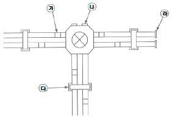
- ㉮
- ㉯
- ㉰
- ㉱
(정답률: 81%)
19. 테이블 탭에는 단면적 1.5mm2 이상의 코드를 사용하고 플러그를 부속시켜야한다. 이 경우 코드의 최대 길이(m)는?
- 1
- 2
- 3
- 4
(정답률: 61%)
20. 다음 중 발열체의 구비조건이 아닌 것은?
- 내열성이 클 것
- 용융, 연화, 산화 온도가 낮을 것
- 저항률이 크고 온도계수가 작을 것
- 연성 및 전성이 풍부하여 가공이 용이 할 것
(정답률: 69%)
2과목: 전력공학
21. 1kWh를 열량으로 환산하면 약 몇 kcal인가?
- 80
- 256
- 539
- 860
(정답률: 38%)
22. 전선의 굵기가 균일하고 부하가 송전단에서 말단까지 균일하게 분포되어 있을 때 배전선 말단에서 전압강하는? (단, 배전선 전체저항 R, 송전단의 부하전류는 I이다.)
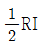
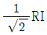
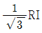
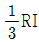
(정답률: 26%)
23. 화력발전소에서 가장 큰 손실은?
- 소내용 동력
- 송풍기 손실
- 복수기에서의 손실
- 연도 배출가스 손실
(정답률: 33%)
24. 송전선로에 댐퍼(Damper)를 설치하는 주된 이유는?
- 전선의 진동방지
- 전선의 이탈방지
- 코로나현상의 방지
- 현수애자의 경사방지
(정답률: 37%)
25. 부하전류의 차단능력이 없는 것은?
- DS
- NFB
- OCB
- VCB
(정답률: 38%)
26. 소호리액터를 송전계통에 사용하면 리액터의 인덕턴스와 선로의 정전용량이 어떤 상태로 되어 지락전류를 소멸시키는가?
- 병렬공진
- 직렬공진
- 고임피던스
- 저임피던스
(정답률: 26%)
27. 발전용량 9800kW의 수력발전소 최대사용 수량이 10m3/s일 때, 유효낙차는 몇 m 인가?
- 100
- 125
- 150
- 175
(정답률: 32%)
28. 역률 개선용 콘덴서를 부하와 병렬로 연결하고자 한다. △결선방식과 Y결선방식을 비교하면 콘덴서의 정전용량(μF)의 크기는 어떠한가?
- △결선방식과 Y결선방식은 동일하다.
- Y결선방식이 △결선방식의 1/2이다.
- △결선방식이 Y결선방식의 1/3이다.
- Y결선방식이 △결선방식의
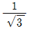
이다.
(정답률: 31%)
29. 순저항 부하의 부하전력 P(kW), 전압 E(V), 선로의 길이 l(m), 고유저항 ρ(Ω·mm2/m)인 단상 2선식 선로에서 선로 손실을 q(W)라 하면, 전선의 단면적(mm2)은 어떻게 표현되는가?(오류 신고가 접수된 문제입니다. 반드시 정답과 해설을 확인하시기 바랍니다.)
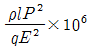
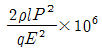
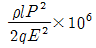
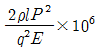
(정답률: 26%)
30. 선로정수를 평형되게 하고, 근접 통신선에 대한 유도장해를 줄일 수 있는 방법은?
- 연가를 시행한다.
- 전선으로 복도체를 사용한다.
- 전선로의 이도를 충분하게 한다.
- 소호리액터 접지를 하여 중성점 전위를 줄여준다.
(정답률: 33%)
31. 400kVA 단상변압기 3대를 △-△결선으로 사용하다가 1대의 고장으로 V-V결선을 하여 사용하면 약 몇 kVA 부하까지 걸 수 있겠는가?
- 400
- 566
- 693
- 800
(정답률: 35%)
32. 직류 송전방정식에 대한 설명으로 틀린 것은?
- 선로의 절연이 교류방식보다 용이하다.
- 리액턴스 또는 위상각에 대해서 고려 할 필요가 없다.
- 케이블 송전일 경우 유전손이 없기 때문에 교류방식보다 유리하다.
- 비동기 연계가 불가능하므로 주파수가 다른 계통간의 연계가 불가능하다.
(정답률: 30%)
33. 22.9kV, Y결선된 자가용 수전설비의 계기용변압기의 2차측 정격전압은 몇 V인가?
- 110
- 220
- 110

- 220

(정답률: 29%)
34. 직격뢰에 대한 방호설비로 가장 적당한 것은?
- 복도체
- 가공지선
- 서지흡수기
- 정전방전기
(정답률: 34%)
35. 동기조상기에 대한 설명으로 틀린 것은?
- 시충전이 불가능하다.
- 전압 조정이 연속적이다.
- 중부하시에는 과여자로 운전하여 앞선 전류를 취한다.
- 경부하시에는 부족여자로 운전하여 뒤진 전류를 취한다.
(정답률: 31%)
36. 송전선로에서 고조파 제거 방법이 아닌 것은?
- 변압기를 △결선 한다.
- 능동형 필터를 설치한다.
- 유도전압 조정장치를 설치한다.
- 무효전력 보상장치를 설치한다.
(정답률: 26%)
37. 동작전류의 크기가 커질수록 동작시간이 짧게 되는 특성을 가진 계전기는?
- 순한시 계전기
- 정한시 계전기
- 반한시 계전기
- 반한시 정한시 계전기
(정답률: 33%)
38. 차단기의 정격 차단시간은?
- 고장 발생부터 소호까지의 시간
- 트립코일 여자부터 소호까지의 시간
- 가동 접촉자의 개극부터 소호까지의 시간
- 가동 접촉자의 동작시간부터 소호까지의 시간
(정답률: 35%)
39. 저압배전계통을 구성하는 방식 중, 캐스케이딩(cascading)을 일으킬 우려가 있는 방식은?
- 방사상방식
- 저압뱅킹방식
- 저압네트워크방식
- 스포트네트워크방식
(정답률: 31%)
40. 정전용량 0.01μF/km, 길이 173.2km, 선간전압 60kV, 주파수 60Hz인 3상 송전선로의 충전전류는 약 몇 A인가?
- 6.3
- 12.5
- 22.6
- 37.2
(정답률: 30%)
3과목: 전기기기
41. 변압기 보호장치의 주된 목적이 아닌 것은?
- 전압 불평형 개선
- 절연내력 저하 방지
- 변압기 자체 사고의 최소화
- 다른 부분으로의 사고 확산 방지
(정답률: 29%)
42. 유도기전력의 크기가 서로 같은 A, B 2대의 동기발전기를 병렬 운전할 때, A발전기의 유기기전력 위상이 B보다 앞설 때 발생하는 현상이 아닌 것은?
- 동기화력이 발생한다.
- 고조파 무효순환전류가 발생된다.
- 유효전류인 동기화전류가 발생된다.
- 전기자 동손을 증가시키며 과열의 원인이 된다.
(정답률: 22%)
43. 일반적인 3상 유도전동기에 대한 설명 중 틀린 것은?
- 불평형 전압으로 운전하는 경우 전류는 증가하나 토크는 감소한다.
- 원선도 작성을 위해서는 무부하시험, 구속시험 1차 권선저항 측정을 하여야한다.
- 농형은 권선형에 비해 구조가 견고하며 권선형에 비해 대형전동기로 널리 사용된다.
- 권선형 회전자의 3선중 1선이 단선되면 동기속도의 50%에서 더 이상 가속되지 못하는 현상을 게르게스현상이라 한다.
(정답률: 28%)
44. 어떤 정류회로의 부하전압이 50V이고 맥동률 3%이면 직류 출력전압에 포함된 교류 분은 몇 V인가?
- 1.2
- 1.5
- 1.8
- 2.1
(정답률: 36%)
45. 저항부하를 갖는 정류회로에서 직류분 전압이 200V일 때 다이오드에 가해지는 첨두역 전압(PIV)의 크기는 약 몇 V 인가?
- 346
- 628
- 692
- 1038
(정답률: 28%)
46. 동기발전기의 전기자권선을 분포권으로 하면 어떻게 되는가?
- 난조를 방지한다.
- 기전력의 파형이 좋아진다.
- 권선의 리액턴스가 커진다.
- 집중권에 비하여 합성 유기기전력이 증가한다.
(정답률: 28%)
47. 3상 권선형 유도전동기의 전부하 슬립 5%, 2차 1상의 저항 0.5Ω이다. 이 전동기의 기동 토크를 전부하 토크와 같도록 하려면 외부에서 2차에 삽입할 저항(Ω)은?
- 8.5
- 9
- 9.5
- 10
(정답률: 26%)
48. 그림은 동기발전기의 구동 개념도이다. 그림에서 2를 발전기라 할 때 3의 명칭으로 적합한 것은?
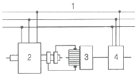
- 전동기
- 여자기
- 원동기
- 제동기
(정답률: 30%)
49. 3상 수은 정류기의 직류 평균 부하전류가 50A가 되는 1상 양극 전류 실효값은 약 몇 A 인가?
- 9.6
- 17
- 29
- 87
(정답률: 18%)
50. 직류기에서 기계각의 극수가 P인 경우 전기각과의 관계는 어떻게 되는가?
- 전기각 × 2P
- 전기각 × 3P
- 전기각 × 2/P
- 전기각 × 3/P
(정답률: 29%)
51. 유도전동기의 2차 회로에 2차 주파수와 같은 주파수로 적당한 크기와 적당한 위상의 전압을 외부에서 가해주는 속도제어법은?
- 1차 전압 제어
- 2차 저항 제어
- 2차 여자 제어
- 극수 변환 제어
(정답률: 26%)
52. 직류발전기의 유기기전력과 반비례하는 것은?
- 자속
- 회전수
- 전체 도체수
- 병렬 회로수
(정답률: 30%)
53. 이상적인 변압기의 무부하에서 위상관계로 옳은 것은?
- 자속과 여자전류는 동위상이다.
- 자속은 인가전압 보다 90° 앞선다.
- 인가전압은 1차 유기기전력 보다 90° 앞선다.
- 1차 유기기전력과 2차 유기기전력의 위상은 반대이다.
(정답률: 23%)
54. 부하전류가 2배로 증가하면 변압기의 2차측 동손은 어떻게 되는가?
- 1/4로 감소한다.
- 1/2로 감소한다.
- 2배로 증가한다.
- 4배로 증가한다.
(정답률: 25%)
55. 직류 분권발전기의 극수 4, 전기자 총 도체수 600으로 매분 600회전할 때 유기기전력이 220V라 한다. 전기자 권선이 파권일 때 매극당 자속은 약 몇 Wb인가?
- 0.0154
- 0.0183
- 0.0192
- 0.0199
(정답률: 30%)
56. 변압기의 1차측을 Y결선, 2차측을 △결선으로 한 경우 1차와 2차간의 전압의 위상차는?
- 0°
- 30°
- 45°
- 60°
(정답률: 31%)
57. 직류기의 철손에 관한 설명으로 틀린 것은?
- 성층철심을 사용하면 와전류손이 감소한다.
- 철손에는 풍손과 와전류손 및 저항손이 있다.
- 철에 규소를 넣게 되면 히스테리시스손이 감소한다.
- 전기자 철심에는 철손을 작게하기 위해 규소강판을 사용한다.
(정답률: 32%)
58. 정격출력 50kW, 4극 220V, 60Hz인 3상 유도전동기가 전부하 슬립 0.04, 효율 90%로 운전되고 있을 때 다음 중 틀린 것은?
- 2차 효율＝96%
- 1차 입력＝55.56kW
- 회전자입력＝47.9kW
- 회전자동손＝2.08kW
(정답률: 22%)
59. 동기전동기에서 출력이 100%일 때 역률이 1이 되도록 계자전류를 조정한 다음에 공급 전압 V 및 계자전류 If 를 일정하게 하고, 전부하 이하에서 운전하면 동기전동기의 역률은?
- 뒤진 역률이 되고, 부하가 감소할수록 역률은 낮아진다.
- 뒤진 역률이 되고, 부하가 감소할수록 역률은 좋아진다.
- 앞선 역률이 되고, 부하가 감소할수록 역률은 낮아진다.
- 앞선 역률이 되고, 부하가 감소할수록 역률은 좋아진다.
(정답률: 16%)
60. 3상 변압기를 1차, Y, 2차 △로 결선하고 1차에 선간전압 3300V를 가했을 때의 무부하 2차 선간전압은 몇 V인가? (단, 전압비는 30：1이다.)
- 63.5
- 110
- 173
- 190.5
(정답률: 21%)
4과목: 회로이론 및 제어공학
61. 선간전압이 200V인 대칭 3상 전원에 평형 3상 부하가 접속되어 있다. 부하 1상의 저항은 10Ω, 유도리액턴스 15Ω, 용량리액턴스 5Ω가 직렬로 접속된 것이다. 부하가 △결선일 경우, 선로전류(A)와 3상 전력(W)은 약 얼마인가?
- Iℓ= 10
 , P3＝6000
, P3＝6000 - Iℓ= 10
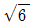
, P3＝8000 - Iℓ= 10
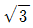
, P3＝6000 - Iℓ= 10
 , P3＝8000
, P3＝8000
(정답률: 20%)
62. 그림(a)와 그림(b)가 역회로 관계에 있으려면 L의 값은 몇 mH인가?
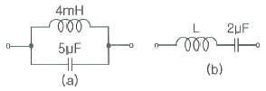
- 1
- 2
- 5
- 10
(정답률: 28%)
63. 공간적으로 서로
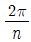
(rad)의 각도를 두고 배치한 n개의 코일에 대칭 n상 교류를 흘리면 그 중심에 생기는 회전자계의 모양은?- 원형 회전자계
- 타원형 회전자계
- 원통형 회전자계
- 원추형 회전자계
(정답률: 26%)
64. 2개의 전력계로 평형 3상 부하의 전력을 측정하였더니 한쪽의 지시가 다른 쪽 전력계 지시의 3배였다면 부하의 역률은 약 얼마인가?
- 0.46
- 0.55
- 0.65
- 0.76
(정답률: 23%)
65. 어떤 소자에 걸리는 전압이
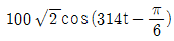
V이고, 흐르는 전류가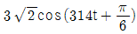
A일 때 소비되는 전력(W)은?- 100
- 150
- 250
- 300
(정답률: 21%)
66.
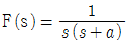
의 라플라스 역변환은?- e-at
- 1-e-at
- a(1-e-at)
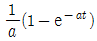
(정답률: 26%)
67. 어떤 회로에 전압을 115V 인가하였더니 유효전력이 230W, 무효전력이 345Var를 지시한다면 회로에 흐르는 전류는 약 몇 A 인가?
- 2.5
- 5.6
- 3.6
- 4.5
(정답률: 27%)
68. 무손실 선로에 있어서 감쇠정수 α, 위상정수를 β라 하면 α와 β의 값은? (단, R, G, L, C는 선로 단위 길이당의 저항, 컨덕턴스, 인덕턴스, 커패시턴스이다.)
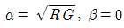
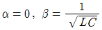
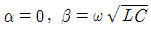
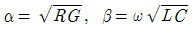
(정답률: 24%)
69. 시정수의 의미를 설명한 것 중 틀린 것은?
- 시정수가 작으면 과도현상이 짧다.
- 시정수가 크면 정상상태에 늦게 도달한다.
- 시정수는 τ로 표기하며 단위는 초(sec)이다.
- 시정수는 과도 기간 중 변화해야할 양의 0.632%가 변화하는데 소요된 시간이다.
(정답률: 27%)
70. R＝100Ω, Xc＝100Ω이고 L만을 가변 할 수 있는 RLC 직렬회로가 있다. 이 때 f＝500Hz, E＝100V를 인가하여 L을 변화시킬 때 L의 단자전압 EL의 최대값은 몇 V 인가? (단, 공진회로이다.)
- 50
- 100
- 150
- 200
(정답률: 23%)
71. 단위 부궤환 제어시스템의 루프전달함수 G(s)H(s)가 다음과 같이 주어져 있다. 이득 여유가 20dB이면 이 때의 K의 값은?
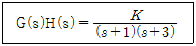
- 3/10
- 3/20
- 1/20
- 1/40
(정답률: 24%)
72. 그림은 제어계와 그 제어계의 근궤적을 작도한 것이다. 이것으로부터 결정된 이득여유 값은?
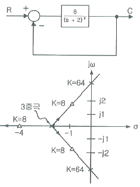
- 2
- 4
- 8
- 64
(정답률: 25%)
73. 노내 온도를 제어하는 프로세스 제어계에서 검출부에 해당하는 것은?
- 노
- 밸브
- 증폭기
- 열전대
(정답률: 29%)
74.
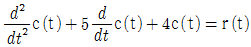
와 같은 함수를 상태함수로 변환 하였다. 벡터 A, B의 값으로 적당한 것은?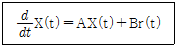
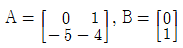
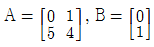
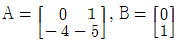
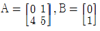
(정답률: 28%)
75. 전달함수
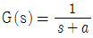
일 때, 이 계의 임펄스응답 c(t)를 나타내는 것은? (단, a는 상수이다.)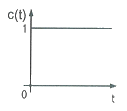
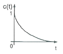
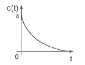
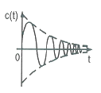
(정답률: 23%)
76. 그림과 같은 스프링 시스템을 전기적 시스템으로 변환했을 때 이에 대응하는 회로는?
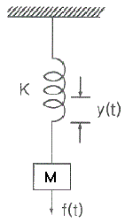
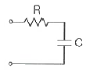
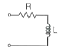
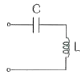
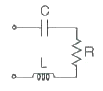
(정답률: 22%)
77. 궤환(Feed back) 제어계의 특징이 아닌 것은?
- 정확성이 증가한다.
- 대역폭이 증가한다.
- 구조가 간단하고 설치비가 저렴하다.
- 계(系)의 특성 변화에 대한 입력대 출력비의 감도가 감소한다.
(정답률: 29%)
78.
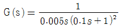
에서 ω＝10rad/s일 때의 이득 및 위성각은?- 20dB, －90°
- 20dB, －180°
- 40dB, －90°
- 40dB, －180°
(정답률: 24%)
79. 그림과 같은 논리회로는?
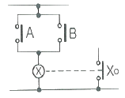
- OR 회로
- AND 회로
- NOT 회로
- NOR 회로
(정답률: 30%)
80. 이산 시스템(Discrete data system)에서의 안정도 해석에 대한 설명 중 옳은 것은?
- 특성방정식의 모든 근이 z 평면의 음의 반평면에 있으면 안정하다.
- 특성방정식의 모든 근이 z 평면의 양의 반평면에 있으면 안정하다.
- 특성방정식의 모든 근이 z 평면의 단위원 내부에 있으면 안정하다.
- 특성방정식의 모든 근이 z 평면의 단위원 외부에 있으면 안정하다.
(정답률: 32%)
5과목: 전기설비기술기준 및 판단기준
81. 특고압을 옥내에 시설하는 경우 그 사용 전압의 최대한도는 몇 kV 이하인가? (단, 케이블 트레이공사는 제외)
- 25
- 80
- 100
- 160
(정답률: 25%)
82. 제1종 접지공사의 접지극을 시설할 때 동결 깊이를 감안하여 지하 몇 cm 이상의 깊이로 매설하여야 하는가?
- 60
- 75
- 90
- 100
(정답률: 32%)
83. 저압 및 고압 가공전선의 높이는 도로를 횡단하는 경우와 철도를 횡단하는 경우에 각각 몇 m 이상이어야 하는가?
- 도로：지표상 5, 철도：레일면상 6
- 도로：지표상 5, 철도：레일면상 6.5
- 도로：지표상 6, 철도：레일면상 6
- 도로：지표상 6, 철도：레일면상 6.5
(정답률: 28%)
84. 발전기를 자동적으로 전로로부터 차단하는 장치를 반드시 시설하지 않아도 되는 경우는?
- 발전기에 과전류나 과전압이 생긴 경우
- 용량 5000kVA 이상인 발전기의 내부에 고장이 생긴 경우
- 용량 500kVA 이상의 발전기를 구동하는 수차의 압유 장치의 유압이 현저히 저하한 경우
- 용량 2000kVA 이상인 수차 발전기의 스러스트 베어링의 온도가 현저히 상승하는 경우
(정답률: 28%)
85. 전력계통의 일부가 전력계통의 전원과 전기적으로 분리된 상태에서 분산형전원에 의해서만 가압되는 상태를 무엇이라 하는가?
- 계통연계
- 접속설비
- 단독운전
- 단순 병렬운전
(정답률: 28%)
86. 샤워시설이 있는 욕실 등 인체가 물에 젖어있는 상태에서 전기를 사용하는 장소에 콘센트를 시설할 경우 인체감전보호용 누전차단기의 정격감도전류는 몇 mA 이하인가?
- 5
- 10
- 15
- 30
(정답률: 23%)
87. ( )안에 들어갈 내용으로 옳은 것은?
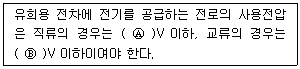
- Ⓐ 60, Ⓑ 40
- Ⓐ 40, Ⓑ 60
- Ⓐ 30, Ⓑ 60
- Ⓐ 60, Ⓑ 30
(정답률: 26%)
88. 사용전압이 몇 V 이상의 중성점 직접접지식 전로에 접속하는 변압기를 설치하는 곳에는 절연유의 구외 유출 및 지하 침투를 방지하기 위하여 절연유 유출 방지설비를 하여야 하는가?
- 25000
- 50000
- 75000
- 100000
(정답률: 23%)
89. 전로의 사용전압이 400V 미만이고, 대지전압이 220V인 옥내전로에서 분기회로의 절연저항 값은 몇 MΩ 이상이어야 하는가?(관련 규정 개정전 문제로 여기서는 기존 정답인 2번을 누르면 정답 처리됩니다. 자세한 내용은 해설을 참고하세요.)
- 0.1
- 0.2
- 0.4
- 0.5
(정답률: 30%)
90. 전기울타리용 전원 장치에 전기를 공급하는 전로의 사용전압은 몇 V 이하이어야 하는 가?
- 150
- 200
- 250
- 300
(정답률: 20%)
91. 가반형의 용접 전극을 사용하는 아크 용접장치의 용접변압기의 1차측 전로의 대지전압은 몇 V 이하이어야 하는가?
- 60
- 150
- 300
- 400
(정답률: 30%)
92. 사용전압이 22.9kV인 특고압 가공전선로(중성선 다중접지식의 것으로서 전로에 지락이 생겼을 때에 2초 이내에 자동적으로 이를 전로로부터 차단하는 장치가 되어 있는 것에 한 한다.)가 상호 간 접근 또는 교차하는 경우 사용전선이 양쪽 모두 케이블인 경우 이격거리는 몇 m 이상인가?
- 0.25
- 0.5
- 0.75
- 1.0
(정답률: 23%)
93. 발전용 수력 설비에서 필댐의 축제재료로 필댐의 본체에 사용하는 토질재료로 적합하지 않은 것은?
- 묽은 진흙으로 되지 않을 것
- 댐의 안정에 필요한 강도 및 수밀성이 있을 것
- 유기물을 포함하고 있으며 광물성분은 불용성일 것
- 댐의 안정에 지장을 줄 수 있는 팽창성 또는 수축성이 없을 것
(정답률: 31%)
94. 특고압 가공전선이 도로 등과 교차하여 도로 상부측에 시설할 경우에 보호망도 같이 시설하려고 한다. 보호망은 제 몇 종 접지공사로 하여야 하는가?(관련 규정 개정전 문제로 여기서는 기존 정답인 1번을 누르면 정답 처리됩니다. 자세한 내용은 해설을 참고하세요.)
- 제1종 접지공사
- 제2종 접지공사
- 제3종 접지공사
- 특별 제3종 접지공사
(정답률: 25%)
95. 지중 전선로를 직접 매설식에 의하여 시설하는 경우에 차량 기타 중량물의 압력을 받을 우려가 없는 장소의 매설 깊이는 몇 cm 이상이어야 하는가?(오류 신고가 접수된 문제입니다. 반드시 정답과 해설을 확인하시기 바랍니다.)
- 60
- 100
- 120
- 150
(정답률: 27%)
96. 특고압의 기계기구·모선 등을 옥외에 시설하는 변전소의 구내에 취급자 이외의 자가 들어가지 못하도록 시설하는 울타리·담 등의 높이는 몇 m 이상으로 하여야 하는가?
- 2
- 2.2
- 2.5
- 3
(정답률: 26%)
97. 버스 덕트 공사에서 저압 옥내배선의 사용전압이 400V 미만인 경우에는 덕트에 제 몇 종 접지공사를 하여야 하는가?
- 제1종 접지공사
- 제2종 접지공사
- 제3종 접지공사
- 특별 제3종 접지공사
(정답률: 34%)
98. 애자사용 공사에 의한 저압 옥내배선 시설 중 틀린 것은?
- 전선은 인입용 비닐 절연전선일 것
- 전선 상호 간의 간격은 6cm 이상일 것
- 전선의 지지점 간의 거리는 전선을 조영재의 윗면에 따라 붙일 경우에는 2m 이하일 것
- 전선과 조영재 사이의 이격거리는 사용 전압이 400V 미만인 경우에는 2.5cm 이상일 것
(정답률: 25%)
99. 철탑의 강도계산을 할 때 이상 시 상정하중이 가하여지는 경우 철탑의 기초에 대한 안전율은 얼마 이상이어야 하는가?
- 1.33
- 1.83
- 2.25
- 2.75
(정답률: 33%)
100. 고압 가공인입선이 케이블 이외의 것으로서 그 전선의 아래쪽에 위험표시를 하였다면 전선의 지표상 높이는 몇 m 까지로 감할 수 있는가?
- 2.5
- 3.5
- 4.5
- 5.5
(정답률: 27%)